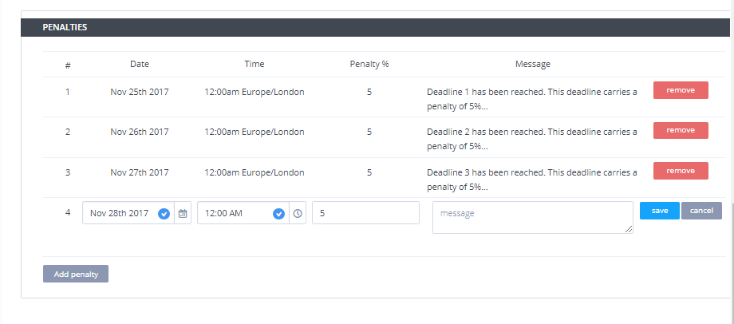
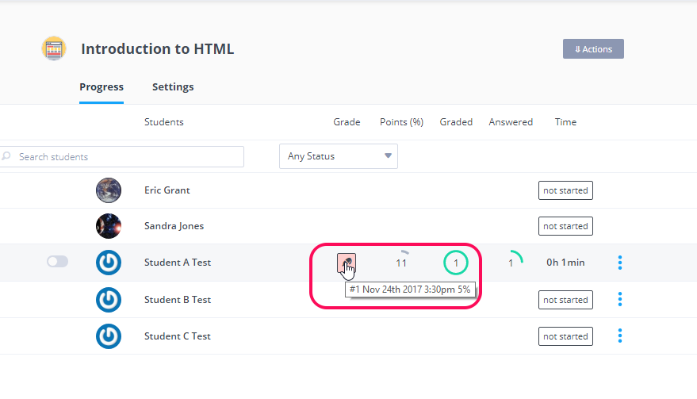
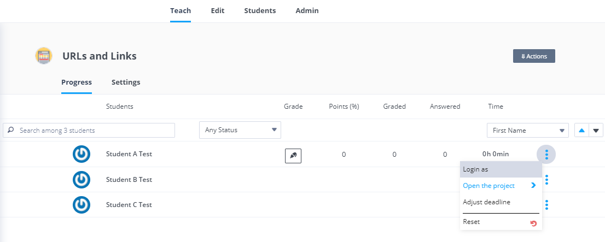
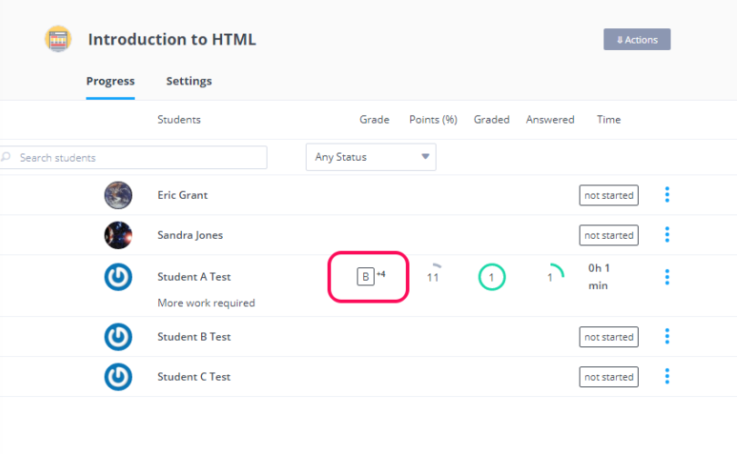

Penalties¶
You can add penalties to the assignment if students don’t complete it within the specified start time and end time (incremental penalties can be applied).
Note
It is recommended that you set the end date/time for the assignment (see Assignment Duration) to the last date/time for the penality to avoid having to change the assignment status for a student who submits the assignment late.

Add Penalties¶
To add a penalty for a late assignment, follow these steps:
Open the assignment Settings.
In the Penalties area, click Add Penalty and complete the following fields:
Number (auto-incremental)
Date - The date the penalty is applied.
Time - The time the penalty is applied on the specified date.
Penalty % - Percentage of the total score for the assignment to be deducted as a penalty.
Message - Description of the penalty. If a message is not specified, one of the following default messages is displayed:
If a student opens a project after the deadline or the student is working in the assignment when deadline is reached, the following message is displayed:
`Deadline X (the table row number) has been reached. This deadline carries a penalty of Y%. You can review your answers with no penalty. However, if you decide to change any answers by pressing the Modify button beneath a question, a Y% penalty deduction will be applied to your overall results. Once a modify button has been pressed once, the penalty deduction will be applied and you will be free to modify as many questions as you like with no additional penalty`If a student clicks Modify after the deadline has passed, the following message is displayed:
`Deadline X (the table row number) has been reached. This deadline carries a penalty of Y%. If you proceed, a Y% penalty deduction will be applied to your overall results. You will then be able to modify as many questions as you like with no additional penalty`If the final deadline has passed, the assignment is forced to read-only and the following message is displayed:
`You have exceeded the final deadline. You are no longer able to make changes to your answers. You are free to review your answers.`
Click Save Changes.
View Penalties in Instructor Dashboard¶
You can view any penalties that have been applied in the Instructor Dashboard. If a penalty has been applied, the grade field has a light red background. Hover above the field to view the penalty details, including number, date/time, and the penalty percentage that has been applied.

The Final Grade shows the final graded score less any penalty deduction. If you have overwritten the field (see Adjust deadline), the penalty deduction is not applied.
Adjust deadline for individual students¶
You can adjust the deadline for individual students should the circumstances warrant additional time to complete the assignment.
To adjust the assignment deadline for an individual student, follow these steps:
Open the assignment.
Find the student in the list, and then click the menu icon in the far right side (3 horizontal dots), and choose Adjust deadline.

On the Adjust Deadline for Student dialog, increase the Days, Hours, and Minutes for the time to be extended for the student to complete the assignment, and then click Apply.
The adjustment is displayed next to the Grade field in the Instructor Dashboard.
